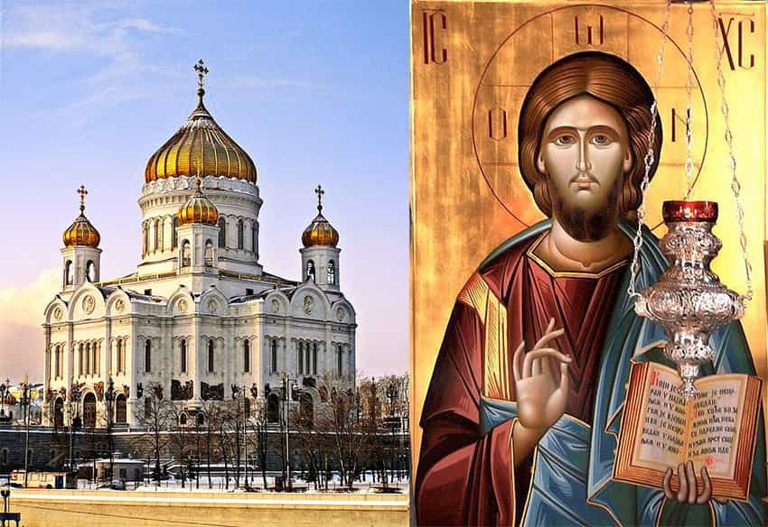
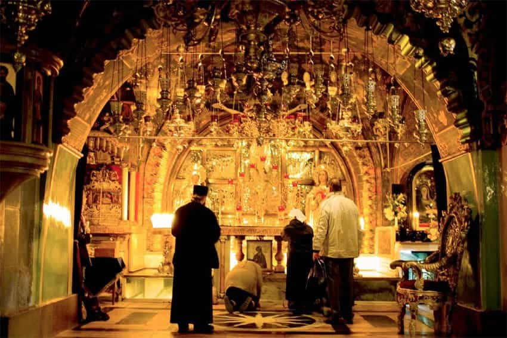
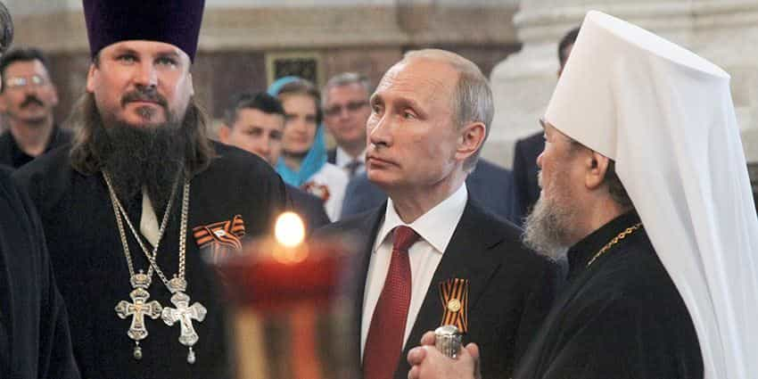

< < < Back
The Orthodox Church Is The Answer To Reviving Christianity In Europe And Saving The West – Return Of Kings
First let us take a look at a Christian faith that is strong, vibrant and alive.
Christianity is a beautiful faith. For all my previous criticism of its intellectual formulation, the one thing it gets 100% correct is that it actually enshrines the nuclear family unit – Father, Son and virgin Mother. In that respect, it is more patriarchal than Islam in overtly formulating The Father as divine authority, The Son as heir to that authority, and the virgin Mary as model all women should aspire to be as wife and mother. The video above is a 26 minute silent reflection on life inside a men’s Orthodox Christian monastery in Abkhazia. The power of the documentary is palpable for its very lack of speech and thus quiet testimony to the essence of Christian truth – the worship of God through Jesus Christ.
After the passionate response to my last essay, I went on YouTube to look up what I could find on the Eastern Orthodox faith. Here is a great video series I would like to share with you all.
For Christianity to return and thrive in Europe & The West, there must be unity.
The single biggest advantage of the Orthodox faith is its unity. There is simply too much division and conflict in almost all flavours of Christianity outside the Roman Catholic Church. Historically, the Orthodox faith does not have a real history of theology (per se). That is, the Orthodox don’t think too much or question too deeply about their faith. They accept. They believe. They practice. Most importantly, they do not allow any change – none – to what they believe is the original church handed down to humanity from St. Paul.
For the Orthodox, it is not about the intellectual foundations (i.e. theology) so much as the community of worshipers and keeping to past traditions. They keep to what their ancestors practiced and see no need to change anything. Doing so would be a grave break and violation of the past, a complete insult to the body of Christ and the family tradition that has been passed down for generations to preserve the faith.

Eastern Orthodox Christianity has kept the original Byzantine rituals and formulations for worship. A good example of its seriousness and unwillingness to change is the fact that they will not let anyone who is not Orthodox to take part in communion. They see communion as a serious ritual, the true taking in of the body and life of Christ, His word, and His salvation. To allow just anyone to partake without proper preparation, proper orientation, and proper intention, is dangerous. The liturgy and hymns are also old. They go back all the way to the original church over 1000 years ago and more. The swinging incense pots is not some ornate flashy thing they do, there is real spiritual purpose and foundation to everything in an Orthodox liturgical mass.
What I have just described is practiced by all Orthodox churches which may strike many American Protestants and Evangelicals as odd. The different designations (Greek, Ukrainian, Russian, etc.) are nothing more than jurisdictional boundaries. If you are Russian, you want to go to mass in your language and with your people. Each church is local and loosely affiliated with the others, but there is no over arching official hierarchy, no Pope as it were for the ENTIRE faith. What unites them as Orthodox is not a single authority ON doctrine (per se), but common faith IN practice (de rigueur).
In many ways, Martin Luther was a revolt against the Pope having authority over how to worship by the local community. His opposition to Indulgences and a paper titled “The Pagan Servitude To The Church” are reminiscent of my own intellectual wrestling trying to understand Christianity. For Luther, it was ultimately about a return of faith to the followers of Christ, not blind obedience to papal authority for which he saw no authority given to it.
His theology challenged the authority and office of the Pope by teaching that the Bible is the only source of divinely revealed knowledge from God[3] and opposed sacerdotalism by considering all baptized Christians to be a holy priesthood.
Martin Luther ~ Wikipedia
Ironically, in Eastern Orthodox, the power of the church rests in the local faithful and has forever been this way. In one video, a story is told about an Orthodox priest who was invited to a world religions syncretic type seminar where he was quoted at the end of the conference as saying “Yes, there are many paths to God and all are valid.” When he returned to his local church and went to put the key in the door, the local church members had already changed the locks!!! How many Catholics would like to do that to the current Pope?!?! This is why the East rejected authority of Rome over THEIR religion. Christ belongs to the people, from God, and the Eastern Orthodox have protected this faith and non-hierarchical organization since the beginning of Christianity.
Why is it that Eastern Christians are agreeable about this? Why don’t they clamour and agitate for new stuff, for revision, for updating? The reason is that in the East, we expect the faith to actually do something. It isn’t just a matter of having the right institution, or having the right theology, though I believe the Orthodox church does have those things. That’s not what does it, really. It’s that we expect that practicing this faith will change people. And you know what? We see that it actually does. We see it over and over again. We see it in contemporary lives. We see people actually transformed. [Video]
To an Orthodox, they practice because it works, not just because it is right.
This… that single statement… would unite all Christianity. Gone would be the divisions, the arguments, the 1000s of flavours of Christ by each Protestant wanting to be a Pope.

If I ever become Christian, it will be in the Orthodox faith. This single video series has proved to me beyond a shadow of doubt that what the Orthodox has works. It works because…
Even after over 70 plus years of Communist oppression & outright murder, the faith has rebounded
Russians are Orthodox because faith in Christ works, not just because it is right. If you have ever known a Russian, you know how much they value what works and not what is bullshit. My intellectualization and analysis of Christianity is precisely the problem in The West. No single Christian tradition in The West, outside of the Catholic faith, can truly claim that what they have works, but they have ALL argued and warred for centuries about being right.
If Western Christianity did work, people would not have left. Leaving aside the massive hurdle of getting Westerners to actually stop being atheists or completely ignoring God, a Christian faith that can actually claim to work is precisely what will get someone like me back in the church. A claim I must repeat, that is actually backed up by evidence, not rhetoric.
The final video I want to close off with is an Orthodox explanation of salvation.
This… brought tears to my eyes. It actually answered one, if not THE, core complaint Westerners have about Christianity as they know it – you are condemned to hell if you reject Christ, and no amount of good works or deeds or repentance can save you if you do not accept Christ, the end. Of importance to note, this priest refers to God only when explaining the Orthodox version of salvation; it is God, not Jesus that is the focus of Eastern Orthodox faith. I suspect this is why the Protestants split from The Vatican and we can see it in their further splintering right up to today; Protestants wanted more Jesus and less God talk from the Pope because it was Jesus that truly saves. (Once again, you can see why a non-Christian starts to scratch his head in puzzlement.)
This Orthodox version of salvation is one I have never heard from any Christian priest or pastor in The West. If Europe, if America, were to hear the message of God in the Orthodox faith, I think you would have a revival like none we have ever witnessed in the past. In fact, the whole Theoria YouTube channel is, I suspect, a production created for just that reason. Thousands of disillusioned Protestants and other long lost former Christians are filling the Orthodox churches. The Theoria video series was created to help orient and guide the newly faithful. Is their any other church outside Catholicism that is seeing this kind of resurgence? (Assuming Catholicism is seeing an influx, I do not know and just speculating because it too has a good history of unity in faith and would be The West’s oldest incarnation of Christianity.)
Conclusion

Putin is demonized in the West for many things, but the one reason “they” hate him the most? Putin and Russia are a walking, talking, living reminder of a faith they thought was all but extinct by their design and command. Putin’s Christian message is not just reaching America, but the entirety of Europe. Note as well that Putin is an astounding example of the claim to proof that the Orthodox faith works.
He has single-handedly inserted himself in Syria and reversed what was not just the holocaust of Syrian Christians, but the globalist plan to balkanize the region with Iran being the last Muslim nation standing in their way. For all those who claim Islam is favored by the elites and want it to take over Europe, just look to Muslim lands where, regardless of how you feel about Islam as a religion, the homeland of Muslim faith is being literally bombed into oblivion in a way Christian “Muslim invasion” Europe is not. Make no mistake, after Islam’s “victory” in Europe, it will be up next for targeted wholesale destruction by they who hate God more than they hate humanity.
I have no doubt that if Europe and The West can find its way back to Christianity, our future will look as bright as Russia’s. From even this most minimal and cursory review of the Eastern Orthodox faith, it is the only path back to Christ in Europe and The West that I can see actually working.
What Christianity needs is unity of faith, unity of belief, unity of practice and unity in God. All of this is found in the Eastern Orthodox church and nowhere else.
Read More: ROK Undercover: What It’s Like To Attend An Eastern Orthodox Church Service